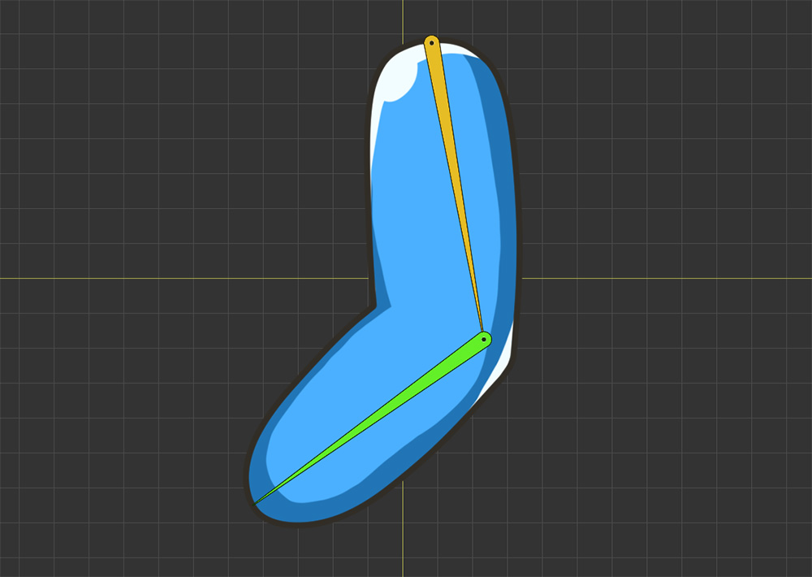
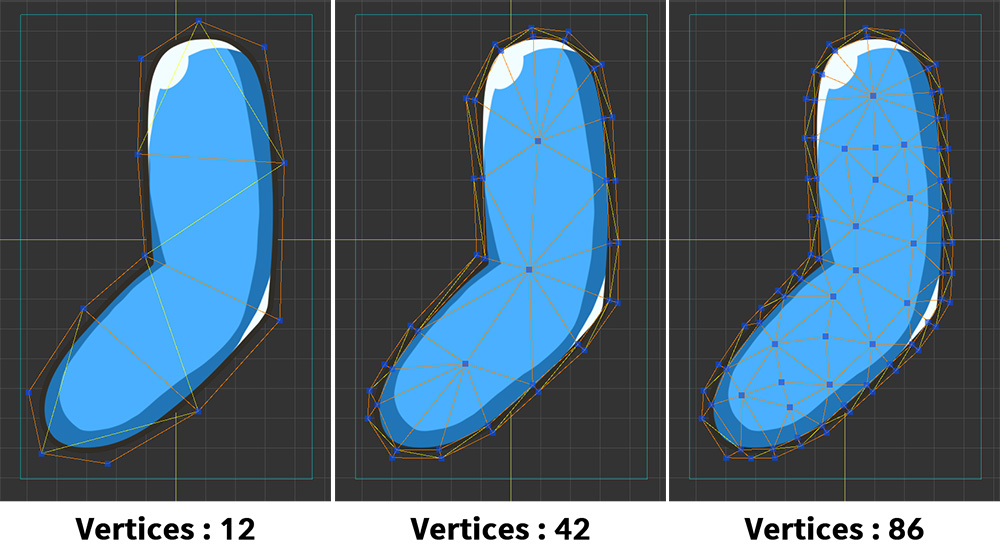
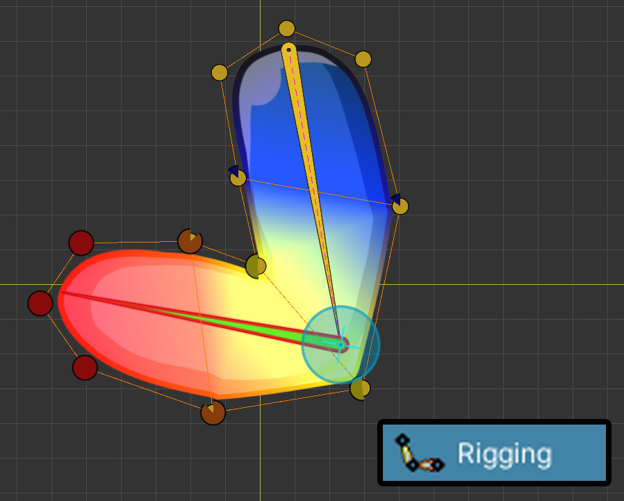
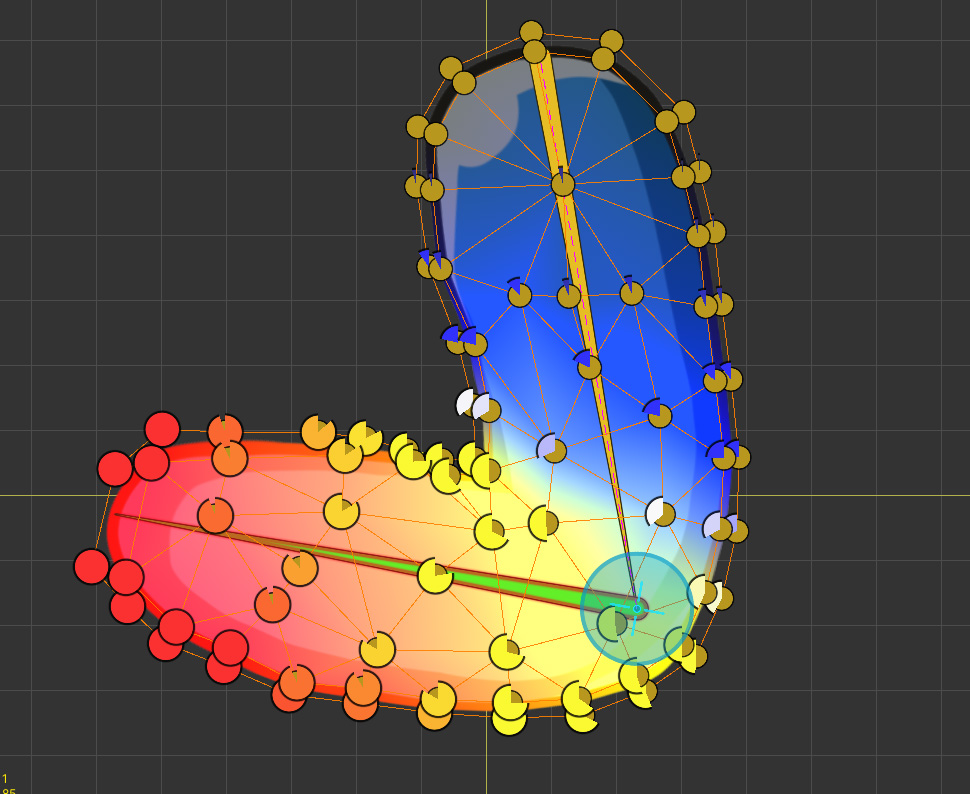
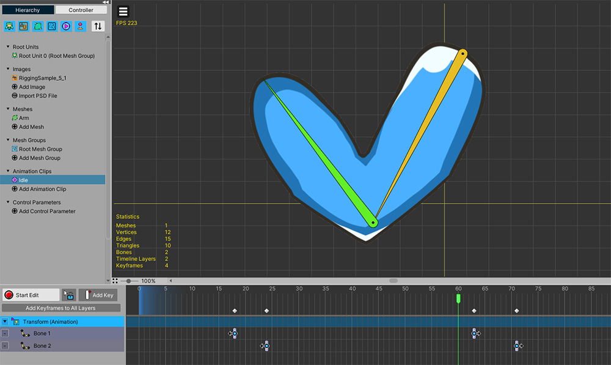
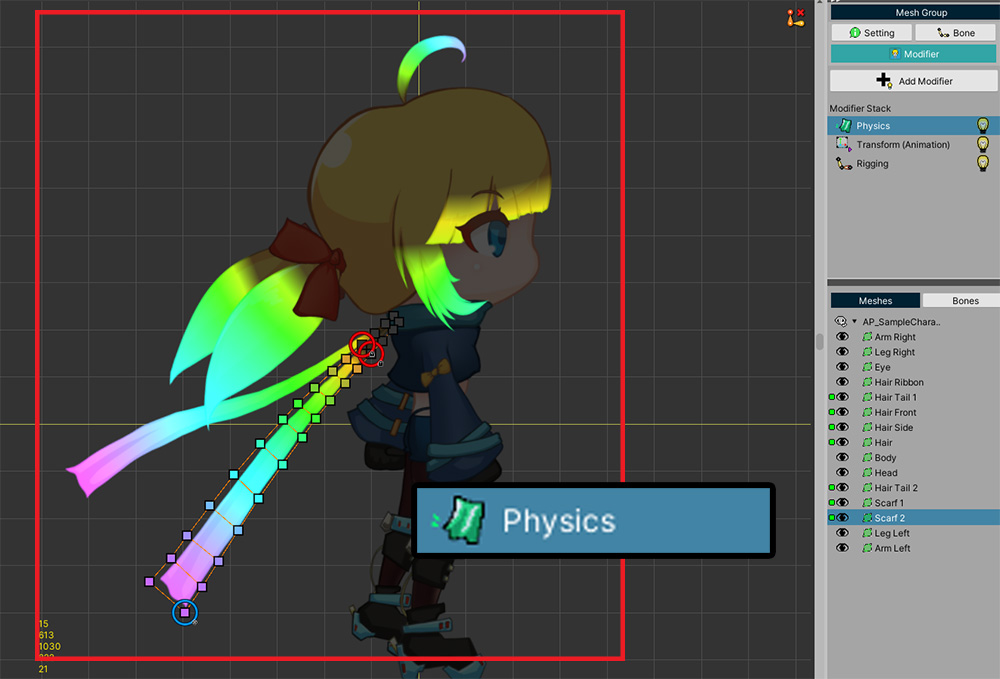
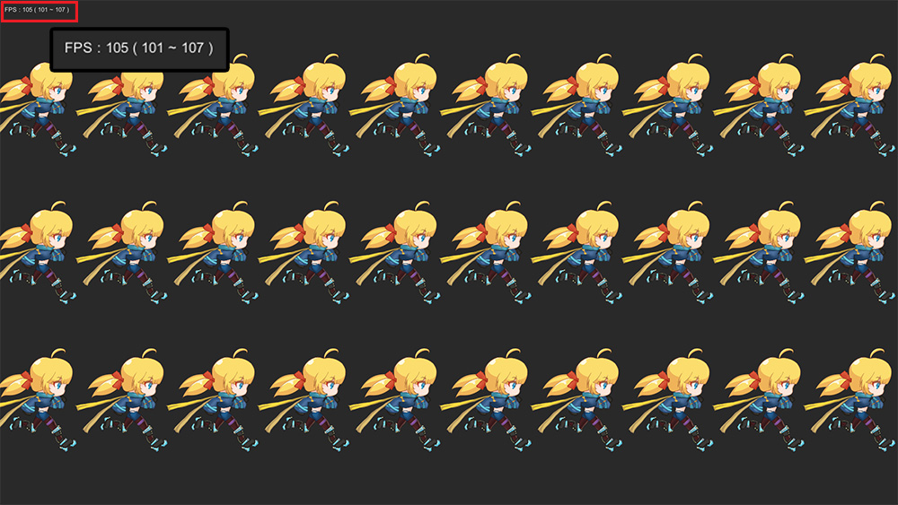

AnyPortrait > Manual > Improve Performance
Improve Performance
1.3.2
When creating a game, improving execution performance is very important, but just as difficult.
Similarly, when making a game using AnyPortrait, performance issues must be carefully managed.
Some factors described on this page will be of great help in optimizing performance.
Note
- Performance tests on this page may have different results depending on the execution environment.
- For GPU optimization, please refer to the related page.
- Built with VSync option disabled to check high FPS.
Using the latest version of AnyPortrait

Our team is constantly working to improve the overall performance of AnyPortrait.
The previous version v1.3.0/v1.3.1 recorded significant performance improvements for animation and rigging.
In v1.3.2, performance for rigging and vertex handling is improved, and memory allocation issues are resolved.
Updating to the latest version of AnyPortrait will help improve your game's performance.
(The above profiling result is the result of testing the example described below on the Unity editor.)
Vertices and Performance
Because AnyPortrait performs CPU-based vertex processing, the performance is worse as the number of vertices increases.
The more vertices the mesh has, the more precise it can be expressed, but it is difficult to expect high performance.
Conversely, having too few vertices can make your animation look awkward.
Therefore, it is very important to construct the mesh with the right number of vertices.

We have prepared a simple example to compare performance according to vertices.
We created a sample joint animation with 1 mesh and 2 bones as above.

And, we prepared the same animation by dividing the sample into three so that the number of vertices was different.
There are meshes that have 12, 42 and 86 vertices respectively for the same image.

Above is how rigging is applied with a few vertices.
There is a slightly rough fold at the joint, but it doesn't look too strange.

Above is a result with rigging applied when the mesh has more vertices.
Because the rigging weight can be applied in detail, the expression of the joint part is relatively precise.

We've created a simple animation of the joints folding and unfolding.

This is what it looks like when the same animation is applied to 3 samples.
You can see that the more vertices there are, the more precise the expression of the joint part.
From this result alone, the animation quality looks better when there are many vertices.

Now let's test the performance.
We wrote a script so that 100 of these samples are placed as above.

Also, we wrote a script so that the average, minimum, and maximum values of FPS (Frames Per Second) are displayed in real time.
After building this scene as a PC app for Windows, we tested it and got the results below.

The graph above shows how the FPS changes with the number of vertices.
When meshing with a few vertices (Low), a good performance of 650 FPS was recorded on average.
Conversely, when there are meshes with many vertices (High), the average execution performance is 270 FPS.
(Higher FPS means better performance.)
In other words, you can see that the performance decreases with the number of vertices.
We recommend that create your character with an appropriate level of vertex density, considering both animation quality and execution performance.
Physics effect and Performance
Physics effects are the factors that greatly affect performance in game engines.
There are two ways to implement physics effects in AnyPortrait.
These are Physics Modifier and Jiggle Bones.
Let's see how these two features affect to the execution performance.

We prepared three samples with Physics Modifier, Jiggle Bones, and Nothing applied to the characters in the demo.
Physics Modifier has been applied to some meshes as shown in the image above.

For the other samples, we applied a Jiggle Bones to set it up to show similar physics movement.

As above, after writing a script to show the FPS while 30 characters placed and animated, we built it as a PC app and tested its performance.

In the case where no physics effect was applied, a high FPS of over 100 was recorded, and based on this, let's compare the performance records of other physics effects.
When Jiggle Bones were applied, there was a decrease of about 10 FPS compared to the case where no physics effect was applied.
When Physics Modifier was applied, a whopping 30 FPS drop was recorded.
In particular, it can be seen that the minimum FPS when Physics Modifier is applied is very low.
Physics Modifier is a function that greatly degrades performance because it calculates each vertex according to the physical material.
Therefore, Physics Modifier was developed to operate as Fixed Frame.
The gap between the frame in which Physics Modifier works and the frame in which it does not work quite large.
On the other hand, Jiggle Bones targets relatively fewer bones than the number of vertices, and is a function that requires very little computation.
In fact, Jiggle Bones shows relatively high execution performance even when it operates in all frames.
The goal expressed by Jiggle Bones and Physics Modifier are slightly different.
However, if the two methods can be substituted, using Jiggle Bones will help improve performance.
Mono and IL2CPP
Unity Game is written in C#, and in order to run this script, it is basically built using Mono.
However, as Unity Engine is updated, it supports a build method called IL2CPP.
This method converts a C# script into a relatively fast C++ code, so it has better execution performance than the Mono build.
If the target platform you are building on supports IL2CPP, this explanation will be of great help.
For more information about IL2CPP, please refer to Official Manual.

(1) Open the Project Settings window of the Unity editor and select the Player menu.
(2) Set the option of Scripting Backend from Mono to IL2CPP.
Let's build and run the game in this state.
(If you build directly to the path built in Mono, the build may fail.)

These are the results of testing by building the above character example in the Mono and IL2CPP.
Compared to the result of recording 96 FPS in the Mono, it recorded 148 FPS, an increase of 50% or more when built in the IL2CPP.
IL2CPP greatly improves the CPU execution performance of Unity apps, and AnyPortrait operates using CPU resources most of the time, so the optimization effect is very splendid.
We recommend that you first check whether the IL2CPP build option can be applied to your project and then actively use it.